Planning on a trip to Epcot WITHOUT children?
Is it even worth it? You might ask. Aren’t Disney parks built for kids?
Err… Not really! There are plenty of rides, shows, drinks and gourmet food options
created to entertain adults (or children in adult bodies – whatever you identify with).
I especially recommend visiting Epcot during their famous festivals,
such as the International Flower & Garden Festival or the Food & Wine Festival.
The pictures you’ll see on this website were taken during the former.
Take a look at some of the adorable topiaries and flowers visitors get to be
surrounded by during the festival:
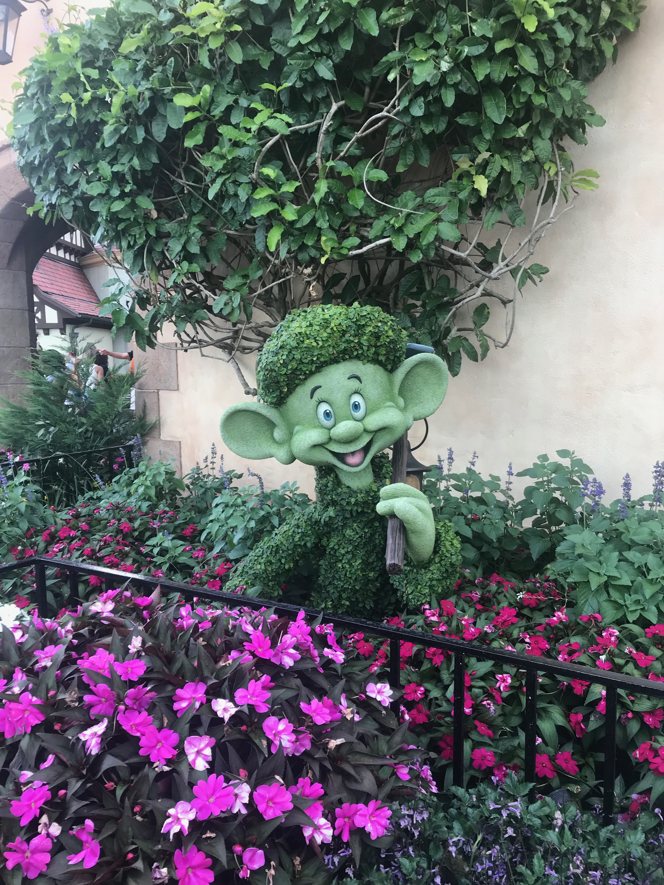
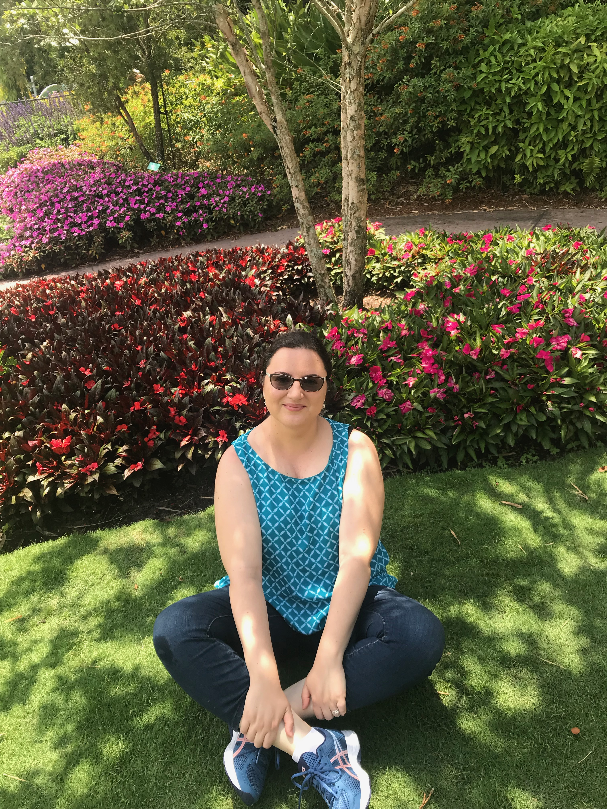

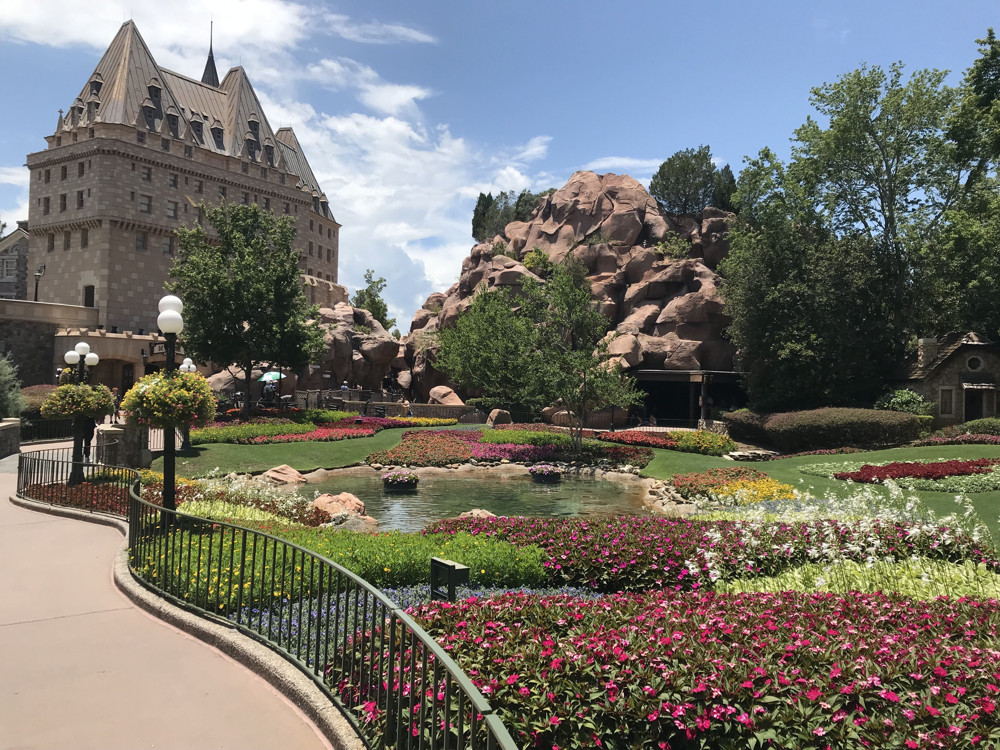
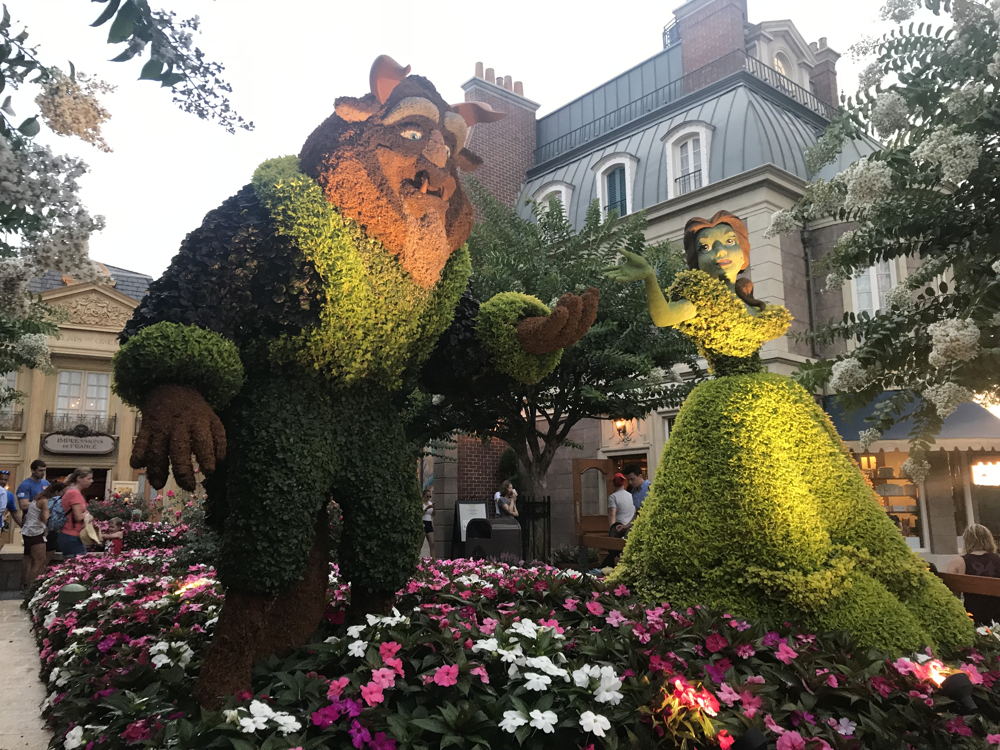
Visual candy aside...
We cannot ignore the necessity of some tasty bites. During the festival there are outdoor kitchens
set up around the World Showcase area of the park. I stopped by the Pineapple Promenade and ordered
a delicious frozen dessert called Violet Lemonade (they get cool points for including an edible flower).
I actually had to have another one before leaving the park. It was that good!
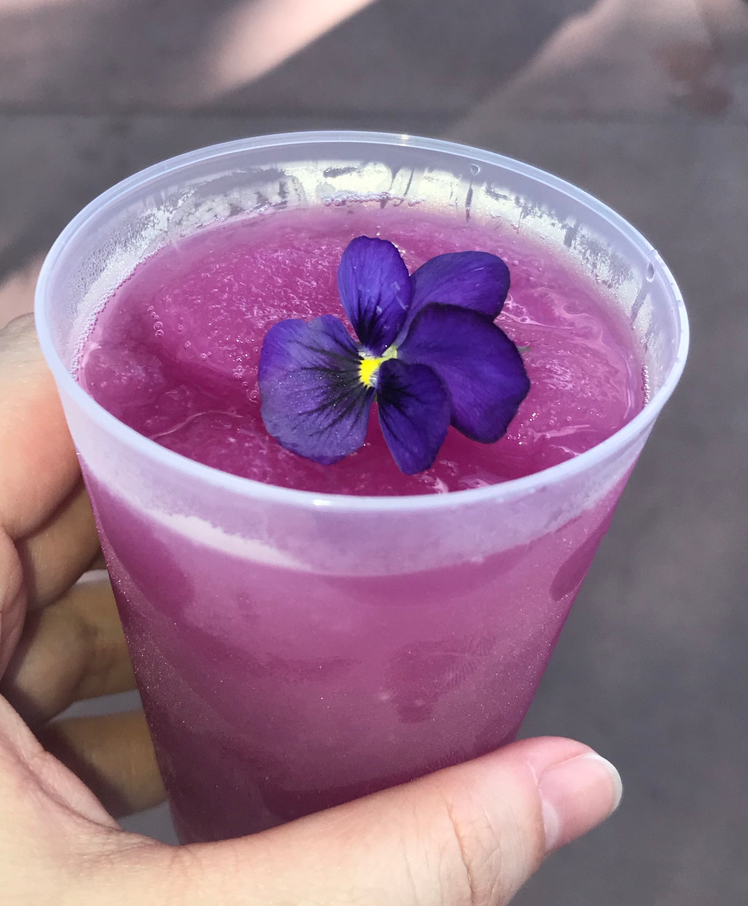
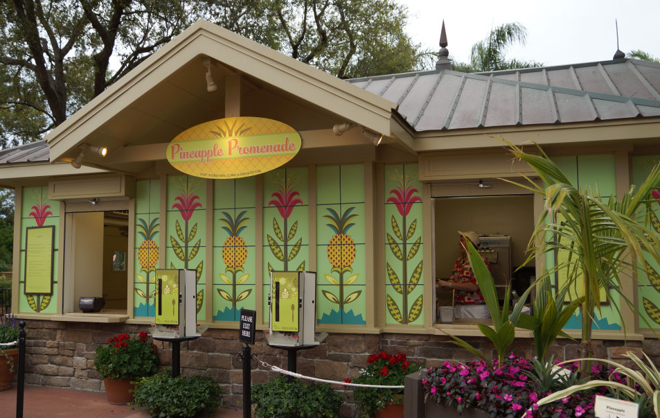
Another delicious treat was the lobster tail from an outdoor kitchen called The Citrus Blossom:
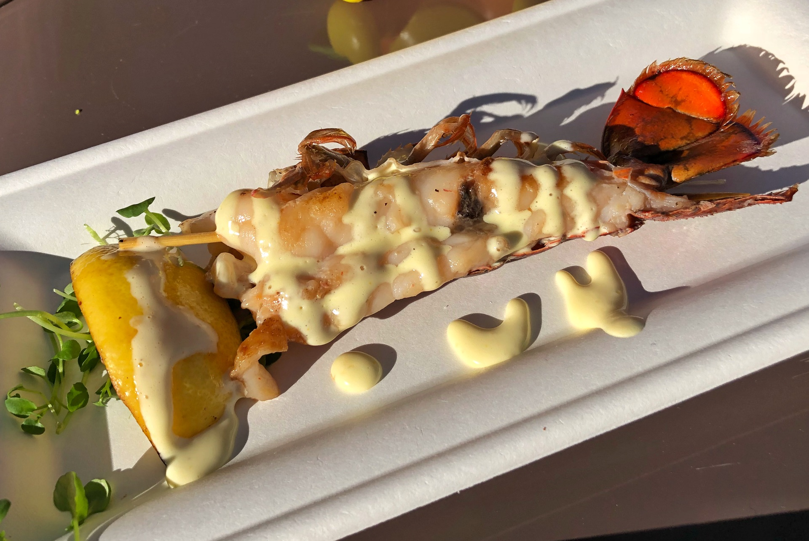
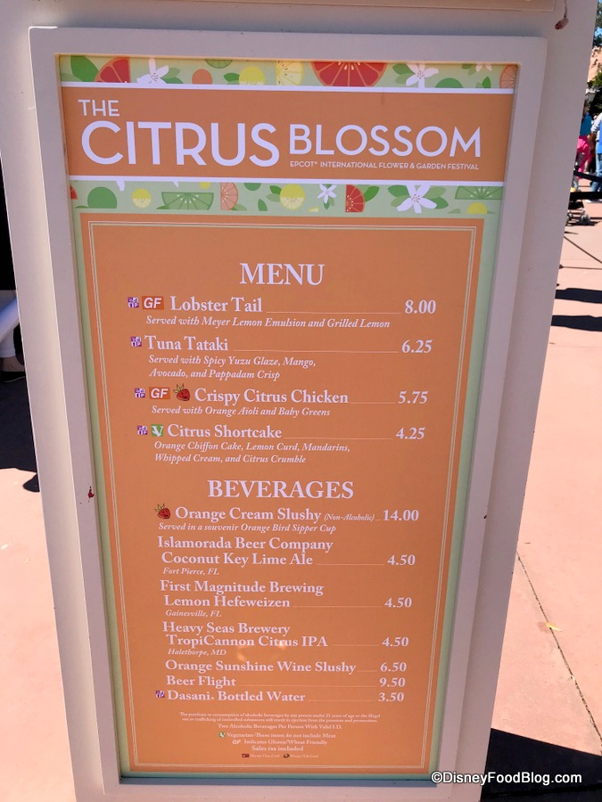
And of course, we can’t ignore a proper dessert.
The Norway Pavilion has a little café called Kringa Bakeri Og Kafe with lots of delicious options to choose from.
I didn’t regret ordering Sven’s Apple Cheesecake. This wasn’t a simple cheesecake with flavoring;
it had actual apple pieces inside as seen in the mangled, after-spoon attack photo below.
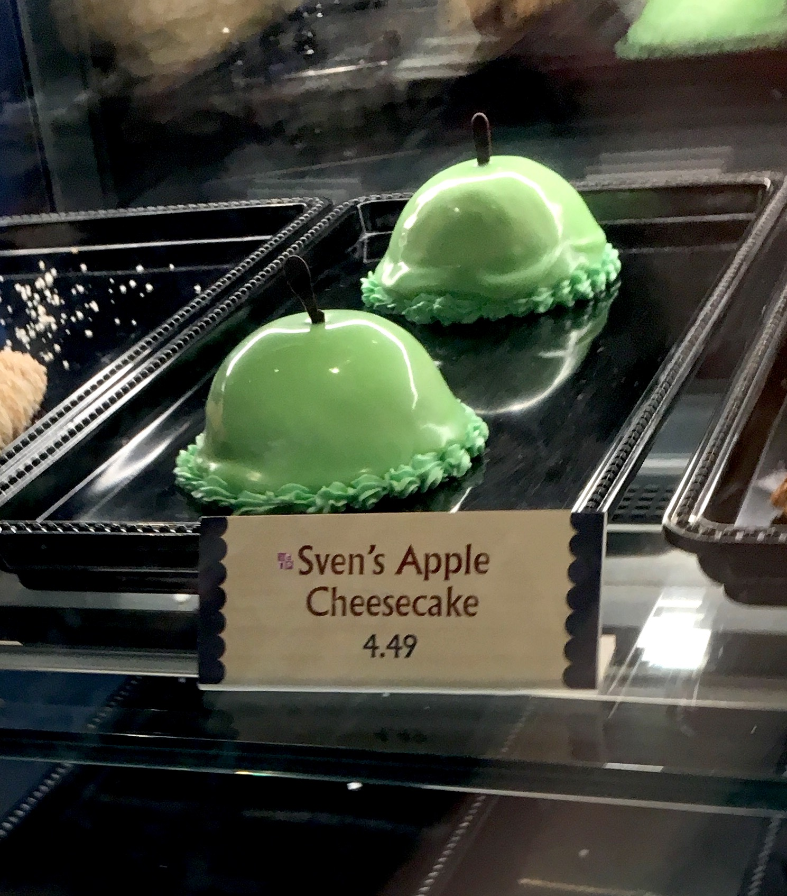
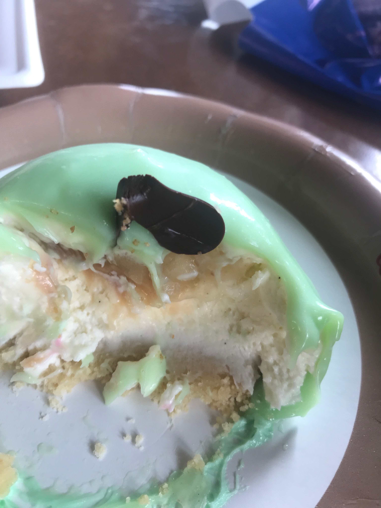
A few souvenirs? Yes, please!
Since tasty bites described previously are all in the World Showcase area, while there,
make sure to stop by the Japanese Pavilion store (Mitsukoshi). It’s by far the best
store in all of Epcot, with beautiful, imported items ranging from home décor to clothing.
If you don’t want to be carrying large shopping bags around, they can ship the items to your
house via UPS or FedEx, or have them delivered to a location near the front entrance of the
park so you can pick it up as you exit. This isn't a personal photo, but should suffice anyone's
curiosity regarding the Japanese Pavilion:
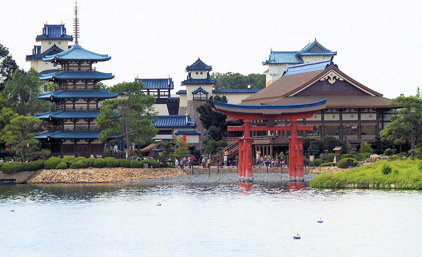
Get your thrill on!
Ok, enough sightseeing, eating and shopping. Let’s talk about the rides!
If you want to avoid long lines, buy your park tickets at least a month
in advance and use Disney's app or website to reserve a FastPass for your
favorite attractions (only a maximum of three are allowed).
If you’re not familiar with the concept, a FastPass is like making an appointment.
You agree to arrive at the ride at a certain time window,
say between 10:05 a.m. and 11:05 a.m.,
and they agree not to make you wait for longer than 30 minutes,
as opposed to wait times that can last up to several hours (not joking)!
I’d recommend reserving a time for the following rides:
- Spaceship Earth (Located inside the sphere by the entrance - No. 54 on the map)
- Soarin' Around the World (Located at Future World West - No. 62a on the map)
- Test Track (Located at Future World East - No. 56 on the map)